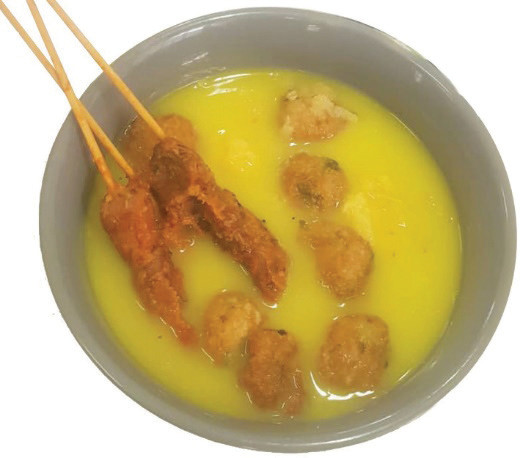

Figure 4.9: Urojo

Activity 4.6
Preparing Urojo
Follow the methods of preparing Urojo.
(i) Prepare this dish using raw mango fruits or any other suitable fruit.
(ii) Assess the quality of the prepared dish.
(iii) Describe the challenge you encountered in preparing the food.
Note: Toppings may include diced onions, boiled eggs, potato dumplings, bhajias, tiny beef skewers and fried meatballs.
Vegetables
Vegetables are edible parts of some plants including flowers, fruits, stems, leaves, roots and seeds. They can be eaten raw or cooked. They are grouped into leafy and non-leafy vegetables. Vegetables can be served with the main meal or be part of the main meal. Combining vegetables can also add good colour, texture and flavour to the food. For example, preparing a mixed vegetable soup requires one to blend onions, carrots, tomatoes and cabbage to obtain nice coloured, textured and flavoured soup. Carrots, tomatoes and lettuce leaves can also serve the purpose of garnishing the food before serving. Most vegetables are rich sources of vitamins and minerals. They also provide fibre, which aids in digestion.